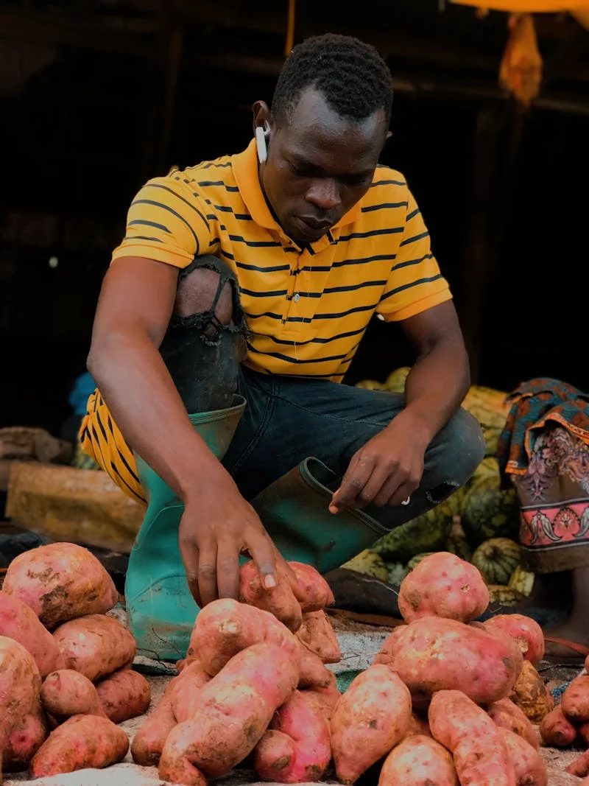

Potatoes Variety
Russet | Brown potato
Large, with rough brown skin starchy white flesh. Ideal for baking, frying, and mashed potatoes. Russet potatoes are simple carbohydrates that are low in fat and high in fiber.
Yukon Gold (White)
Medium-sized, with thin yellow skin and creamy flesh. Great for roasting, boiling, and mashing. Yukon Gold potatoes are a good source of vitamins and minerals, including vitamin C, vitamin B6, potassium, and manganese. Yukon Gold are complex carbohydrates.
Red
Small to medium-sized, with thin smooth red skin and waxy texture. Excellent for salads, roasting, and boiling. Red potatoes are a good source of vitamins and minerals, including vitamin C, vitamin B6, potassium, and manganese. Red potatoes are complex carbohydrates.
Fingerling
Small, finger-shaped potatoes with thin skin and firm flesh. Excellent for roasting or sauteing, salads and boiling. Fingerling potatoes are a good source of vitamins and minerals, including vitamin C.
Purple
Purple or blue potatoes are small to medium-sized, with smooth purple skin with vibrant flesh. High in antioxidants, and great for boiling, baking, or making colorful chips.
New
Immature potatoes harvested early in the season, with thin skin and waxy texture. Ideal for steaming or boiling. New potatoes are a good source of vitamins and minerals, including vitamin C, vitamin B6, potassium, and manganese.
Sweet Potato | Yam
Technically not a true potato, but often grouped. Orange or white flesh with sweet, starchy flavor. Used for baking, mashing and fries. Sweet potatoes are a good source of vitamins and minerals, including vitamin A, vitamin C, potassium, and manganese. Complex carbohydrates.
Adirondak Blue
Deep blue skin and vibrant blue-purple flesh. Rich in antioxidants, and great for boiling, roasting, or making colorful potato salads or chips. Complex carbohydrates.
The Power of the Potato
Nutrition Highlights
Potatoes contain nearly every important vitamin and nutrient, except vitamins A and D, making their life-supporting properties unrivalled by any other single crop. Keep their skin and add some dairy, which provides the two missing vitamins, and you have a healthy human diet staple.
You even have 2g of protein for every 100g of potato; eat 5.5 kilos per adult per day, if one’s to believe some estimates of consumption in mid-1600s Ireland, and you have a good supply.
For landless tenants in 17th- and 18th-Century Ireland, a single acre of land cultivated with potatoes and one milk cow was nutritionally sufficient for feeding a large family of six to eight. No cereal could claim that feat. Thus, began the centuries-long captivation among Irish and British peasants with the potato, grounded in rented earth and scarcity.
